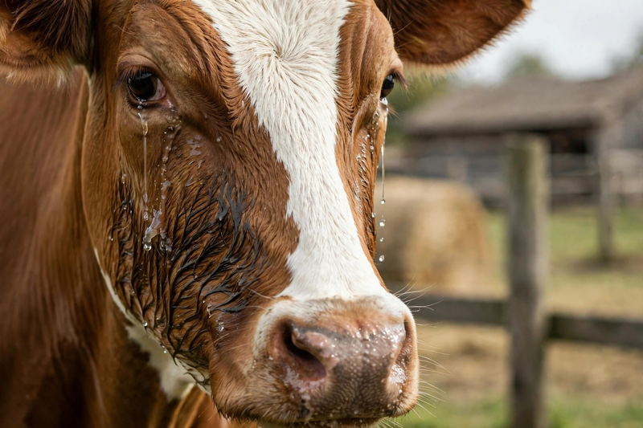
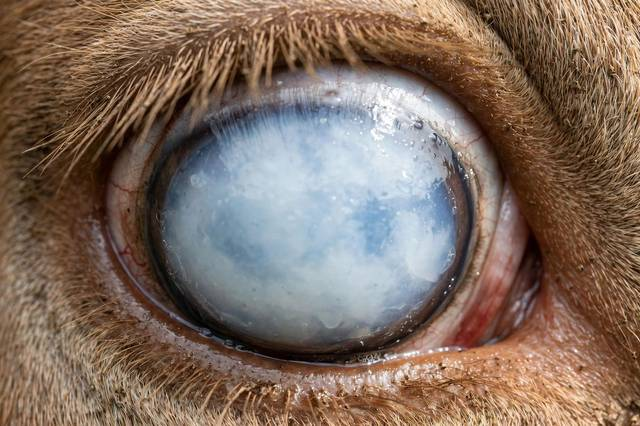

Pinkeye is a contagious eye disease of cattle that can cause corneal ulceration, pain and temporary or permanent vision loss. Moraxella bovis is a common bacterial cause, though other organisms may contribute.
This guide covers clinical signs, causes, diagnosis, treatment principles and prevention.
Red conjunctiva, corneal cloudiness and ulcers(The eye looks red and inflamed; the cornea turns cloudy and may ulcerate)
3
White or blue corneal opacity(A white or blue haze covers the cornea in severe cases)
Cloudy, watery eye with tearing

Red, inflamed eye with a cloudy cornea

White or blue corneal opacity
Causes and Transmission
Spread occurs through eye secretions, close contact and mechanical transmission by flies. Dust, ultraviolet light, tall grass and eye irritation can increase risk.
Pathogenesis
Moraxella bovis bacteria colonise the surface of the eye, helped by irritation from dust, sunlight, flies and tall grass. The bacteria attach to the cornea and release toxins that damage the corneal surface, causing inflammation of the conjunctiva and cornea (keratoconjunctivitis).
The eye waters, the eyelids swell and the cornea turns cloudy; if untreated, an ulcer can deepen and the eye may rupture. Flies carry the bacteria from eye to eye, spreading the disease through the herd.
Veterinary Diagnosis
Diagnosis is based on eye examination and herd history. Fluorescein staining can identify corneal ulcers. The veterinarian should rule out foreign bodies, trauma and other eye diseases.
Differential Diagnosis
Several conditions can look similar. A veterinarian distinguishes them by the signs, history and laboratory findings:
Foreign body or trauma to the eye — affects one eye with sudden onset and does not spread through the herd.
Malignant catarrhal fever — causes eye cloudiness with very high fever and mouth lesions.
Listeriosis (silage eye) — causes eye inflammation, sometimes with nervous signs.
Treatment and Case Management
Treatment depends on severity and may include veterinarian-selected antimicrobials, pain relief, eye protection or other procedures. Do not apply human eye medicines or steroid drops unless specifically prescribed by a veterinarian.
When to seek urgent help: Severe eye pain, a deep ulcer, rupture risk or sudden loss of vision needs urgent veterinary care.
Recommended Medicines
1
Antibiotic – Oxytetracycline(Treats the bacterial eye infection)20 mg/kg IM every 48–72 h (long-acting)
2
NSAID – Flunixin meglumine(Relieves eye pain and inflammation)2.2 mg/kg IV once daily
3
Topical – Antibiotic eye ointment(Applied directly to the affected eye)As prescribed by a veterinarian
⚠ Important Tips:
Use antibiotics only under veterinary advice.
Never apply human eye medicines or steroid drops unless the vet prescribes them.
Protect the affected eye from sunlight, dust and flies.
Severe eye pain, a deep ulcer or sudden vision loss needs urgent veterinary care.
Injection — vet-administered onlyMedicines — only as prescribed by a veterinarian
Prevention and Herd Management
Control flies, reduce dust and eye irritation, manage pasture height, isolate affected animals when practical and use vaccination only where appropriate products and local recommendations exist.
Frequently Asked Questions
What are the symptoms of pinkeye in cattle?
Excessive tearing, squinting, light sensitivity, a red conjunctiva, corneal cloudiness and ulcers. Severe cases may develop a white or blue corneal opacity.
What causes pinkeye in cattle?
Pinkeye is a contagious eye disease; Moraxella bovis is a common bacterial cause, though other organisms may contribute. Spread occurs through eye secretions, close contact and flies. Dust, ultraviolet light, tall grass and eye irritation can increase risk.
How is pinkeye in cattle diagnosed?
Diagnosis is based on eye examination and herd history. Fluorescein staining can identify corneal ulcers. The veterinarian should rule out foreign bodies, trauma and other eye diseases.
How is pinkeye in cattle treated?
Treatment depends on severity and may include veterinarian-selected antimicrobials, pain relief, eye protection or other procedures. Do not apply human eye medicines or steroid drops unless specifically prescribed by a veterinarian.
How can pinkeye in cattle be prevented?
Control flies, reduce dust and eye irritation, manage pasture height, isolate affected animals when practical, and use vaccination only where appropriate products and local recommendations exist.
How to treat pinkeye in cattle?
Treatment depends on severity and may include veterinarian-selected antimicrobials, pain relief, eye protection or other procedures. Do not apply human eye medicines or steroid drops unless specifically prescribed by a veterinarian.
Why is my cow eye cloudy?
A cloudy cornea with tearing, squinting and light sensitivity is typical of pinkeye in cattle. Severe cases may develop a white or blue corneal opacity, so a veterinarian should examine the eye.
گائے کی آنکھ میں سفیدی یا دھندلاہٹ کیوں ہوتی ہے؟
پنک آئی میں آنکھ سے پانی بہنا، جھپکنا، روشنی سے تکلیف اور قرنیے پر دھندلاہٹ یا زخم ہوتا ہے۔ یہ مکھیوں اور قریبی رابطے سے پھیلتی ہے۔ انسانی آنکھ کی دوا خود سے نہ ڈالیں، ویٹرنری ڈاکٹر سے علاج کروائیں۔
Key Takeaway
Early recognition, accurate diagnosis, responsible veterinary care and herd-level prevention are central to managing this condition. Follow current local veterinary authority guidance and medicine labels.
Radostits, O.M., Gay, C.C., Hinchcliff, K.W., Constable, P.D. Veterinary Medicine: A Textbook of the Diseases of Cattle, Horses, Sheep, Pigs and Goats.
FAO animal health manuals. Food and Agriculture Organization of the United Nations.
✍️ Written by Dr. Shahid Bilal Depal, DVM (PVMC RVMP #15068)
This guide is for educational purposes. Consult a registered veterinarian for diagnosis and treatment.